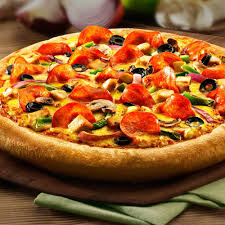

Welcome to Junk Food World
WANNA KNOW ABOUT FEW JUNK FOODS?

FRIES
French fries are generally considered junk food due to their high calorie and fat content, often associated with increased risk of health problems like heart disease and obesity. While potatoes themselves are nutritious, the deep-fried preparation and high-fat cooking methods make them a less healthy option.
PIZZA
Pizza is often considered a junk food due to its high calorie, sodium, and fat content, particularly when it comes to fast-food or commercially prepared options. While it can be a balanced meal with healthy ingredients, it often lacks nutritional value and can contribute to negative health outcomes if consumed regularly.

BURGER
Burgers can be considered junk food depending on their ingredients and preparation methods, especially if they are high in saturated fat, sodium, and calories. Fast-food burgers, often paired with fries and sugary drinks, are generally considered less nutritious than homemade options. However, homemade burgers can be a healthier choice if prepared with lean meats, whole-grain buns, and plenty of vegetables. Why Burgers are Sometimes Considered Junk Food: High in Saturated Fat and Cholesterol: Fast-food burgers, especially those with beef patties, tend to be high in saturated fat and cholesterol. Excessive Sodium: Many fast-food burgers are loaded with sodium from ingredients like cheese, sauces, and preservatives. High Calorie Count: The combination of meat, cheese, sauces, and buns can result in a high-calorie burger. Lack of Nutrients: While burgers provide protein, they may lack essential vitamins and minerals found in whole foods.